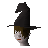

McGrubor's Wood (underground)
Underground area at 2647, 9880 · Kingdom of Kandarin, Underground
Open on the world map → Open in knowledge graph → Surface: McGrubor's Wood
NPCs
| NPC | Level | Spawns | Notable drops |
|---|---|---|---|
| 82 | 3 | Coins, Fire rune, Chaos rune, Gem drop table | |
| 45 | 3 | ||
| 45 | 10 | Coins, Herb drop table, Iron med helm, Bronze bar | |
| 43 | 2 | ||
 Winelda | 1 |